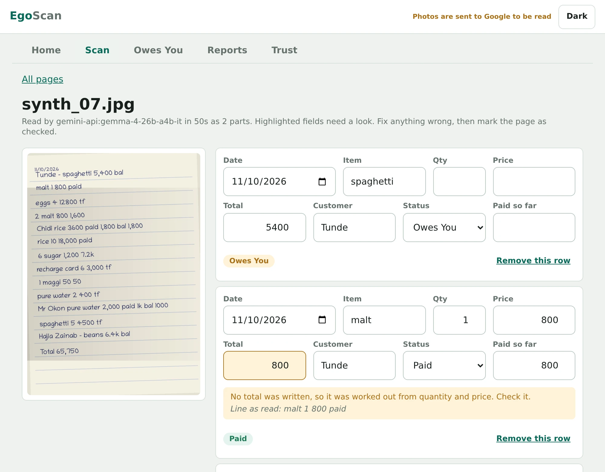

EgoScan, the way into EgoTrack
Paper to ledger.
A small trader's business lives in an exercise book. EgoScan reads the photo of a page, checks every line against itself, and hands the owner a record they can trust, without retyping a single row.
Gemma reads. Code calculates. The owner confirms.
Everything on this page is labelled by what it is: measured, synthetic, or not yet verified.
27/10
rice 2 x 14k = 28,000 paid
sugar 3 x 2,500 paid
Adaeze - oil 5 x 3k = 15,000 owe
beans 4 x 1,200 = 4,900 paid
pure water 3 600 paid
Total 57,300
The problem
A trader's ledger is an exercise book and a pen. A line through a name means the debt was paid.
Retyping years of records into an app is why most traders never start. Every app they could use assumes the records are already digital, so the people with the most to gain are the ones locked out.
Why existing options fail
Cloud tools cost money, need data, and put the list of who owes the shop on someone else's server. Generic text recognition fails on notebook habits: 33/000, 2.5k, a naira sign read as an A, a date on its own line that applies to everything below it.
Why it is urgent
Money owed sits unseen in a book. Nobody can remind, total or report on what they cannot search. The record exists, but it cannot work for the owner.
How it works
- 1
Photograph
Add a whole notebook at once. Pages are read in the background, each with its own status.
- 2
Gemma transcribes
A vision model copies each line as text. It is never asked to add anything up.
- 3
Code checks
Amounts are parsed, quantity times price is recomputed, every total is compared with the line the model read, and rows are compared with the page total.
- 4
The owner reviews
The photo sits beside the rows. Doubtful fields are highlighted with a reason in plain words.
- 5
Checked pages count
Only confirmed pages feed Owes You, reports, exports and the shop's own vocabulary.
Why the model never totals
A model that reads a page and also adds it up can produce a total that looks right and is wrong, and the owner cannot tell by looking. So the model only copies what is written. Everything numeric is done by ordinary code, and the code also cross-checks the model against itself. Disagreements are flagged, never silently corrected.
- Each parsed total must appear among the numbers in the line the model transcribed.
- The rows must add up to the total written at the foot of the page, and any difference is shown.
- A struck-through debt is marked paid and flagged for the owner to confirm.
- Nothing counts until a person has checked the page.
It knows notebook habits
A date on its own line starts a new day. A name written as a heading applies to the lines under it. A footer total is the page total, not a sale. A name with an amount and no payment mark is treated as owed and flagged.
It adapts to each shop without training
Names from checked pages become the shop's vocabulary, used as a spelling hint and to snap near misses to known names. Each snap is flagged so the owner can see and undo it. Every correction is also stored, which is the labelled data a later fine-tune would need.
It copes with slow, flaky models
Reading is asynchronous with a worker pool. Failed pages can be retried, work resumes after a restart, and the hosted client retries with backoff and rotates between models.
The product
Screenshots of EgoScan running, reading synthetic notebook pages. No customer's record appears on this site. Pick a screen.

Also in the product: export to Excel and CSV, a shop vocabulary that learns names from checked pages, light and dark themes, and records handed to EgoTrack in its own data model.
Try the checks
A simplified version of the checking step, running in your browser. Edit the transcription, or edit a field on a row: editing a row clears its flag, as in the product. Then mark the page as checked and see what reaches Owes You. The real engine has more rules and is in the repository.
Review
Highlighted fields need a look. Fix anything wrong, then mark the page as checked.
One line per row: qty x price = total, then paid or owe. Put a customer first as Name - item. Start a line with ~ for a struck-through line. A line starting Total is the page total. 2.5k means 2,500.
Evidence
Every figure here is from a recorded run, with its date, model and settings in the repository. Where something is not measured, it says so.
Synthetic pages
12 pages, 134 rows, run on 16 October 2026 with Gemma 4 (gemma-4-26b-a4b-it) on the Gemini API. These pages are much easier than real handwriting. They are not a claim about real-world accuracy.
| Metric | Strips | Single image |
|---|---|---|
| Rows found | 99.25% | 99.25% |
| Total exactly right, of rows found | 94.0% | 90.2% |
| Paid, owed or part marked correctly | 100.0% | 100.0% |
| Customer name correct | 100.0% | 100.0% |
| Wrong totals | 8 | 13 |
| Wrong totals that the checks flagged | 100.0% | 100.0% |
| Tokens per page | 3,076 | 1,973 |
The number that matters is the highlighted row. Every wrong total was flagged, in both modes. A wrong figure the owner is told about is a prompt to look, not a loss. Several wrong totals came from lines such as pure water 3 600 paid, where it is genuinely ambiguous whether 600 is a price or the total. The checks notice that quantity times price disagrees, and flag it for a person.
Real notebook photos
22 photos from two real shop notebooks, run on 16 October 2026. They are hard: blurry, dim, tilted and compressed by messaging apps, with running totals, strike-throughs, point-of-sale entries and large amounts. The photos are not published because they hold customers' names and debts.
| Notebook | Photos | Rows read | Rows flagged for review | Photos with no rows |
|---|---|---|---|---|
| Shop A (small items, point-of-sale, debts) | 6 | 46 | 18 (39%) | 0 |
| Shop B (large amounts) | 16 | 163 | 91 (56%) | 0 |
| Both | 22 | 209 | 109 (52%) | 0 |
Every photo produced rows. Two returned nothing on the first pass because the notebook filled a small part of the frame, and were recovered by an automatic zoomed retry. The 52% is a review burden, not an error rate: many flags sit on heading lines, running totals and lines with no amount, which are not sales. There is no ground truth for these pages yet, so the figure does not say how many rows are correct. Reducing the noise is the next improvement.
Which checks fired on the real pages
| Flag | Meaning | Rows |
|---|---|---|
no_item | A line with an amount but no item name | 55 |
no_amount | A line with no readable amount | 41 |
crossed_out | Struck through, treated as paid, owner confirms | 14 |
owed_no_name | Marked owed with no customer name | 10 |
total_not_in_raw | Parsed total not among the numbers in the line read | 6 |
ambiguous_separator | Forms like 33/000 that can be read two ways | 6 |
unreadable_qty | Quantity could not be read | 3 |
math_mismatch, unreadable_amount, assumed_owed, part_without_amount | One row each | 1 each |
Engineering
| What | Result |
|---|---|
| Automated tests | 106 passing, run in CI. They cover parsing, checks, dates, snapping, the page cross-check, debts, summaries, the HTTP layer, failure and retry, and resume after restart. |
| Import into EgoTrack's real store | Records imported through EgoTrack's own public functions. The store's own derived values (record count, customer count, per-customer balance, Owes You total) matched the bundle's summary, to the naira. |
| End to end with the hosted model | Gemma 4 on the Gemini API read real notebook photographs and synthetic pages through the real server and interface. |
| Lint, static analysis | Clean in CI. Static analysis: 11 findings before fixes, none high, 0 after. |
What has not been verified
- Accuracy on real handwriting against ground truth. There is no ground truth yet. The real-page numbers above measure workload and review burden, not correctness.
- The local, private model path. It is implemented behind the same interface and covered by tests against fakes, but it has not been run end to end, so its quality and speed are not claimed.
- The larger Gemma 4 model. It was a fallback that returned capacity errors most of the day, so no results are attributed to it.
- Any real user. No trader has used the product day to day yet.
What testing found, and what changed
- An early benchmark showed no rows on half the pages. The cause was the page generator, which had picked a font with no Latin glyphs, so those pages were rows of empty boxes and the model was right to return nothing. The generator was fixed and those results discarded. The lesson recorded: look at the inputs before blaming the model.
- On real pages the page-total check caught a row duplicated across a strip boundary because the two readings spelled it slightly differently. Overlap duplicates are now matched fuzzily.
- A photo with the notebook in a small corner of the frame returned no rows. Empty pages are now retried once as zoomed tiles.
- Splitting tall pages into strips gave fewer wrong totals (8 against 13) at about 56% more tokens per page, but fewer pages reconciled. Twelve pages cannot settle it, so the decision is marked for review once real ground truth exists.
Security
A shop ledger is a list of who owes the shop money, so it was attacked before it was shown. This is the author's own assessment from 16 October 2026. It is not an independent audit or a certification.
| Method | Scope | Result |
|---|---|---|
| Active penetration test | A running instance, 34 checks | 10 failing before the fixes, 0 after |
| Static analysis (bandit) | All application, script and benchmark code | 0 findings after fixes |
| Known-vulnerability lookup (OSV) | 26 installed runtime packages | 0 with known advisories |
| Secrets scan | Whole git history and tracked files | No keys, tokens or private keys |
| Browser sink review | The interface script | No innerHTML, eval, document.write or inline handlers |
| Browser click-through | 18 checks with strict headers on | All pass, no script errors |
What the penetration test found, then fixed
| Finding | Severity | Fix |
|---|---|---|
| Stored cross-site scripting through an upload that was both a valid image and HTML | High | Stored type and served type now come from the image's real format |
| No protection against DNS rebinding | High | Requests with an unapproved Host header are refused |
| No security headers | Medium | Strict content security policy, no framing, nosniff, referrer and permissions policies |
| Decompression bomb: a small file claiming 900 million pixels caused an error | Medium | Oversize images are refused with a clear message |
| SQL column names built from strings | Low | A guard refuses any column not on an allow-list. Values were always bound parameters |
| CI had default token permissions | Low | Workflow now requests read-only access |
Privacy by design
With a local model, photos never leave the computer. With the hosted model, only the photo and an item-name hint are sent, customer names are never added to the prompt, and the first screen says so. Everything after the model call (parsing, checks, storage, debts, exports) runs locally. There are no accounts, telemetry, analytics or third-party scripts in the app.
Still open, written down
- There is no sign-in yet. The app listens on the local machine only.
- Stored files are not encrypted. There are no backups.
- Builder API keys are a list in an environment variable, with no per-key quota or revocation.
- No third-party audit and no fuzzing.
Decisions that shape it
Each is written down with its context, what was chosen and what was rejected, so a later change supersedes it in the open.
- The model transcribes, code calculates
- A model that also adds up can be confidently wrong. Every number the owner sees traces to text on the page and a deterministic rule.
- Pluggable vision backends, local by default
- One interface with a local flag. Local Gemma on the owner's computer is the default, and the hosted model serves machines that cannot run one.
- Asynchronous reading with a worker pool
- A slow model must not freeze the interface or lose work. Pages queue in SQLite, and anything left reading after a crash is resubmitted on start.
- Adapt with a shop vocabulary, not training
- Per-shop fine-tuning needs labelled data and GPU time no owner has. Confirmed pages build a vocabulary instead, and each correction is kept as future training data.
- Read tall pages in overlapping strips
- The vision encoder works at a fixed size, so a full page can make small writing illegible. Strips give more pixels per character, and the cost is measured against a single image.
- Nothing counts until a person has checked it
- A wrong number could send an owner to chase money that is not owed. Debts, totals, exports and vocabulary are built only from confirmed pages.
- The engine is generic, the product is separate
- The reading engine is generic and MIT licensed, with a versioned API. EgoTrack's own application stays a separate product, integrated through its data model.
The opportunity
Every shop that still keeps a notebook is a customer who cannot start on any app without retyping it.
Market size is not measured yet, so no TAM figure is claimed here. A number nobody has validated would only weaken the numbers that are real.
Why now
Open-weight multimodal models such as Gemma 4 can read handwriting at a cost a small business can carry, and can run on a local machine when data must stay put.
What traders said
Willingness to pay depended on one condition: their data and business must be secure. Three conversations, not a study.
Three business hypotheses to test
EgoTrack on-ramp. Every new merchant arrives with a notebook. Scanning turns it into their first month of records, which removes the biggest reason not to start.
Platform, per page. Bookkeeping and fintech products call the API and pay per page to serve merchants who keep paper.
Market-side digitiser. Someone runs it for a market and charges shops per notebook. A local model has near-zero marginal cost.
Willingness to pay is not validated for any of these.
Competition
| Option | What it does | Where it falls short |
|---|---|---|
| Retype by hand | Owner or a clerk enters every line | Slow, so most never start |
| Generic text recognition | Reads printed text | Misreads notebook habits and does not check sums |
| Bookkeeping apps | Track records going forward | No way to bring existing paper in |
| EgoScan | Reads, checks, and hands the rows to the owner to confirm | Early. Real-handwriting accuracy not yet measured |
Go to market
1. Start beside the user
Begin with traders I can reach and watch use it, and get a real first user whose notebook is the test.
2. Builders
A documented API, an MIT licence and an integration guide. Photo in, checked rows out.
3. Word of mouth
A trader who sees their own book as Owes You tells the next stall. Then the same notebook habits across other Nigerian markets.
For builders: the API
curl -X POST $HOST/api/v1/extract?format=egotrack \
-H "Authorization: Bearer $KEY" \
-F "file=@notebook-page.jpg"Photo in, checked rows out. The call is stateless: nothing is stored. It supports optional API keys, a concurrency limit and OpenAPI docs. format=egotrack also returns the rows as records in EgoTrack's merchant data model, verified against EgoTrack's real store.
Status, team and what comes next
Honest status
Built and tested. No paying or daily users yet. No revenue yet, and no projections are claimed because nothing here has been validated.
Impact
It gives a paper-keeping trader a usable record without retyping it. The engine is MIT licensed so other builders can serve the same merchants once the full product launches. A local model keeps every page on the machine, and the hosted path is stated plainly on a Trust screen.
Team
Nwokolo Victor, builder of EgoScan and EgoTrack. Designed, built, tested and secured the product. Grew up around the shops this is for. Shop owners consented to their notebooks being used for development. Their customers did not, which is why nothing from those pages is shown here and every demo uses synthetic pages.
Financials
Cost to run today: hosted Gemma 4 on a free tier for the demo, with a daily page cap. A local model has near-zero marginal cost.
To measure next
Cost per page, seconds per page, and review time saved per notebook on real pages.
To validate
What a trader or a builder will pay, and whether they come back the next day.
What funding would buy, in order
- Ground truth for real handwriting, so accuracy is measured and not guessed.
- The private local model path, run end to end.
- Sign-in and encryption at rest, the two open security items.
- The first traders using it daily, and the first test of what they will pay.
EgoTrack brings records in.
EgoScan brings paper in.